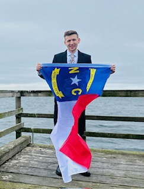
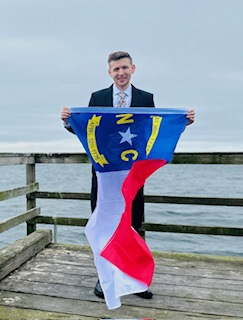

Hi, my name is Celestia and I will answer to Celest for people who can't pronounce my name, but I prefer Celestia, especially with church members who usually have no trouble with it. I am from Olympia, WA, but live in Kingston. I have been a member of The Church of Jesus Christ of Latter-day Saints all my life. I live with my three younger children. My oldest is on a mission in Charlotte, North Carolina and loving it! I love spending time with my children and family.
I love music, dance, and art. I used to be a musical theater major at BYUI and then a media production/music technology major at a University in London. My major is now Software Development as an online student and I plan to end up with a Software Engineering Degree. There are so many advantages for careers in web design or using the skills in your own business. I have always wanted to learn this. This is my first semester back in school after getting my AA many years ago at what is now BYU-Idaho. I am so excited to finish my degree.
Being a student at BYU-Idaho is really amazing for me right now and it gives me so much hope for the future! I love talking about the gospel while learning because all knowledge comes from God, so it enhances your learning.